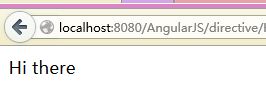

本文整理并扩展了《AngularJS》这本书第六章里面的内容，此书近期即将由电子工业出版社出版，敬请期待口令：Angular
1.一点小说明
指令的作用：实现语义化标签
我们常用的HTML标签是这样的：
<div>
<span>一点点内容</span>
</div>
而使用AngularJS的directive（指令）机制，我们可以实现这样的东西：
<tabpanel>
<panel>子面板1</panel>
<panel>子面板2</panel>
</tabpanel>
很多人可能要惊呼，这货和JSP或者Struts等等框架里面的taglib很像啊！
呃，说实话，实际上就是这样的，只不过这里是使用JavaScript来实现的。正因为如此，所以很多taglib做不到的功能，使用它就都可以做到，比如访问N层scope里面的对象之类的事情（参见后面第5个例子）。
2.实例1：从最简单的开始
<html ng-app='app'>
<body>
<hello></hello>
</body>
<script src="../angular-1.0.3/angular.min.js"></script>
<script src="HelloDirect.js"></script>
</html>
对于以上代码里面的<hello>标签，浏览器显然是不认识的，它唯一能做的事情就是无视这个标签。那么，为了让浏览器能够认识这个标签，我们需要使用Angular来定义一个hello指令（本质上说就是自己来把<hello>这种玩意儿替换成浏览器能识别的那些标准HTML标签）。
来看这段温馨的JS代码：
var appModule = angular.module('app', []);
appModule.directive('hello', function() {
return {
restrict: 'E',
template: '<div>Hi there</div>',
replace: true
};
});
以上代码大概看两眼就可以了，不要太在意细节。
然后我们就可以在浏览器里面看到这样的内容：

实际产生的标签结构是这样的：

可以看到，<hello>这个东东已经被<div>Hi there</div>这个标签替换掉了，这也是以上JS代码里面replace:true这行配置的作用，代码里面的template配置 项当然就是我们要的div标签啦，至于restrict:'E'这个配置项的含义，请看下表：

ok，看完上面的表格，对于restrict这个属性相信你已经秒懂了，那么我们来玩儿点花样吧。如果我们需要替换的HTML标签很长，显然不能用 拼接字符串的方式来写，这时候我们可以用templateUrl来替代template，从而可以把模板写到一个独立的HTML文件中。
3.实例2：transclude（变换）
先看例子，JS代码：
var appModule = angular.module('app', []);
appModule.directive('hello', function() {
return {
restrict: 'E',
template: '<div>Hi there <span ng-transclude></span></div>',
transclude: true
};
});
HTML代码：
<html ng-app='app'>
<head>
<meta http-equiv="content-type" content="text/html; charset=utf-8" />
</head>
<body>
<hello>
<br/>
<span>原始的内容，</span><br/>
<span>还会在这里。</span>
</hello>
<hello>
</hello>
</body>
<script src="../angular-1.0.3/angular.min.js"></script>
<script src="Transclude.js"></script>
</html>
运行效果如下：

生成的HTML标签结构如下：

和第一个例子对比，这个例子的JS和HTML代码都略有不同，JS代码里面多了一个transclude: true，HTML代码里面在<hello>内部出现了子标签。
按照我们在第一个例子中的说法，指令的作用是把我们自定义的语义化标签替换成浏览器能够认识的HTML标签。那好，如果我们自定义的标签内部出现了子标签，应该如何去处理呢？很显然，transclude就是用来处理这种情况的。
对于当前这个例子，transclude的作用可以简化地理解成：把<hello>标签替换成我们所编写的HTML模板，但是<hello>标签内部的内容保持不变。
很显然，由于我们没有加replace:true选项，所以<hello>标签还在，没有被替换掉。同时，通过这个例子你还还会发现一 个暗藏的属性，那就是浏览器实际上非常智能，虽然它并不认识<hello>这个标签，但是页面没有出错，它只是默默地把这个标签忽略掉了！怎 么样？是不是碉堡了？
你可以自己在上面的JS代码里面加上replace:true，然后再看生成的HTML结构。
4.实例3：关于compile和link
JS代码：
var appModule = angular.module('app', []);
appModule.directive('hello', function() {
return {
restrict: 'E',
template: '<span>Hi there</span>',
replace: true
};
});
appModule.controller('MyController',function($scope) {
$scope.things = [1,2,3,4,5,6];
});
HTML代码：
<html ng-app='app'>
<body ng-controller='MyController'>
<div ng-repeat='thing in things'>
{{thing}}.<hello></hello>
</div>
</body>
<script src="../angular-1.0.3/angular.min.js"></script>
<script src="CompileAndLink.js"></script>
</html>
呃，这个例子是用来解释一点点理论的，所以单纯看效果可能看不出个鸟。
如前所述，指令的本质其实是一个替换过程。好，既然如此，Angular到底是如何进行替换的呢？嗯嗯，这个过程分2个阶段，也就是本节标题所说的compile（编译）和link（连接）了。
简而言之，compile阶段进行标签解析和变换，link阶段进行数据绑定等操作。这里面更加细节的处理过程请参见《AngularJS》这本书中的解析，这里就不赘述了（呃，实际上是因为解释起来很长很麻烦，叔懒得在这儿说了
）。
那么，知道这件事情有什么用途呢？
比方说，你有一些事件需要绑定到某个元素上，那么你需要提供一个link函数，做法请看下一个例子。
5.实例4：一个复杂一点的例子Expander
这是《AngularJS》这本书里面提供的一个例子，但是书里面没有给出完整的可运行代码，所以这里给出来，大家参考一下。
JS代码：
var expanderModule=angular.module('expanderModule', [])
expanderModule.directive('expander', function() {
return {
restrict : 'EA',
replace : true,
transclude : true,
scope : {
title : '=expanderTitle'
},
template : '<div>'
+ '<div class="title" ng-click="toggle()">{{title}}</div>'
+ '<div class="body" ng-show="showMe" ng-transclude></div>'
+ '</div>',
link : function(scope, element, attrs) {
scope.showMe = false;
scope.toggle = function toggle() {
scope.showMe = !scope.showMe;
}
}
}
});
expanderModule.controller('SomeController',function($scope) {
$scope.title = '点击展开';
$scope.text = '这里是内部的内容。';
});
HTML代码：
<html ng-app='expanderModule'>
<head>
<meta http-equiv="content-type" content="text/html; charset=utf-8" />
<script src="../angular-1.0.3/angular.min.js"></script>
<link rel="stylesheet" type="text/css" href="ExpanderSimple.css"/>
</head>
<body>
<div ng-controller='SomeController'>
<expander class='expander' expander-title='title'>
{{text}}
</expander>
</div>
</body>
<script src="ExpanderSimple.js"></script>
</html>
CSS代码：
.expander {
border: 1px solid black;
width: 250px;
}
.expander>.title {
background-color: black;
color: white;
padding: .1em .3em;
cursor: pointer;
}
.expander>.body {
padding: .1em .3em;
}
运行效果如下：

注意一下JS代码里面的这一段：
link : function(scope, element, attrs) {
scope.showMe = false;
scope.toggle = function toggle() {
scope.showMe = !scope.showMe;
}
}
自己跑一跑例子，研究一番，不多解释。
6.实例5：一个综合的例子
JS代码：
var expModule=angular.module('expanderModule',[])
expModule.directive('accordion', function() {
return {
restrict : 'EA',
replace : true,
transclude : true,
template : '<div ng-transclude></div>',
controller : function() {
var expanders = [];
this.gotOpened = function(selectedExpander) {
angular.forEach(expanders, function(expander) {
if (selectedExpander != expander) {
expander.showMe = false;
}
});
}
this.addExpander = function(expander) {
expanders.push(expander);
}
}
}
});
expModule.directive('expander', function() {
return {
restrict : 'EA',
replace : true,
transclude : true,
require : '^?accordion',
scope : {
title : '=expanderTitle'
},
template : '<div>'
+ '<div class="title" ng-click="toggle()">{{title}}</div>'
+ '<div class="body" ng-show="showMe" ng-transclude></div>'
+ '</div>',
link : function(scope, element, attrs, accordionController) {
scope.showMe = false;
accordionController.addExpander(scope);
scope.toggle = function toggle() {
scope.showMe = !scope.showMe;
accordionController.gotOpened(scope);
}
}
}
});
expModule.controller("SomeController",function($scope) {
$scope.expanders = [{
title : 'Click me to expand',
text : 'Hi there folks, I am the content that was hidden but is now shown.'
}, {
title : 'Click this',
text : 'I am even better text than you have seen previously'
}, {
title : 'Test',
text : 'test'
}];
});
HTML代码：
<html ng-app="expanderModule">
<head>
<meta http-equiv="content-type" content="text/html; charset=utf-8" />
<script src="../angular-1.0.3/angular.min.js"></script>
<link rel="stylesheet" type="text/css" href="Accordion.css"/>
</head>
<body ng-controller='SomeController' >
<accordion>
<expander class='expander' ng-repeat='expander in expanders' expander-title='expander.title'>
{{expander.text}}
</expander>
</accordion>
</body>
<script src="Accordion.js"></script>
</html>
CSS代码：
.expander {
border: 1px solid black;
width: 250px;
}
.expander>.title {
background-color: black;
color: white;
padding: .1em .3em;
cursor: pointer;
}
.expander>.body {
padding: .1em .3em;
}
运行效果：

这个例子主要的难点在于如何在子Expander里面访问外层Accordion的scope中的数据，这一点解释起来略复杂，这里就不展开了，详细描述参见《AngularJS》一书